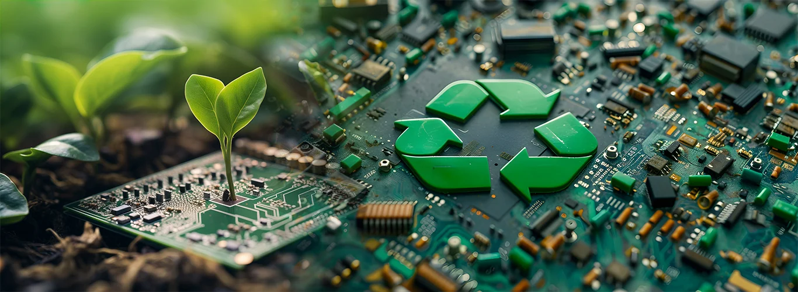

Future of E-Waste Management

As technology rapidly advances, the issue of electronic waste (e-waste) is growing. Proper management of e-waste is crucial to prevent environmental damage and recover valuable materials. Here’s what the future holds for e-waste management:
- Advanced Recycling Technologies
- Innovative recycling methods, such as AI-driven sorting and chemical recovery, are making e-waste recycling more efficient.
- Circular Economy Practices
- Manufacturers are focusing on designing products that can be easily repaired, upgraded, and recycled to minimize waste.
- Stricter Regulations and Policies
- Governments worldwide are enforcing stringent e-waste disposal laws, encouraging responsible recycling and proper waste management.
- Increased Consumer Awareness
- Awareness campaigns and take-back programs are empowering consumers to dispose of electronics responsibly.

About Me
We can contribute to a healthier planet for future generations.
Popular Posts